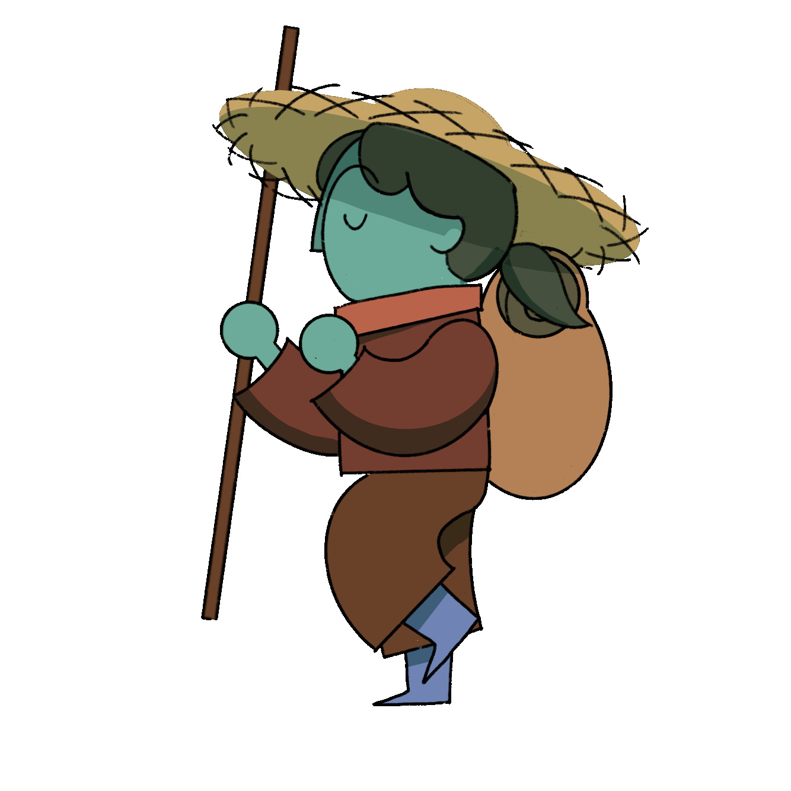
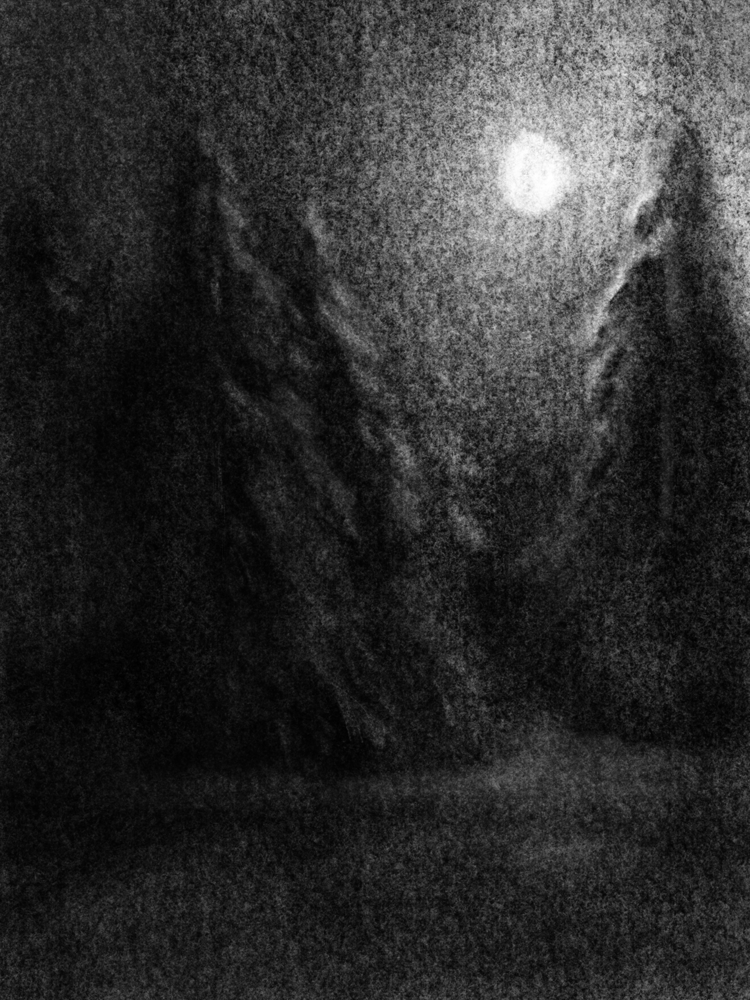
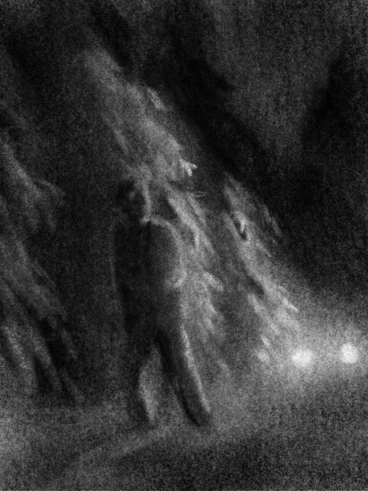
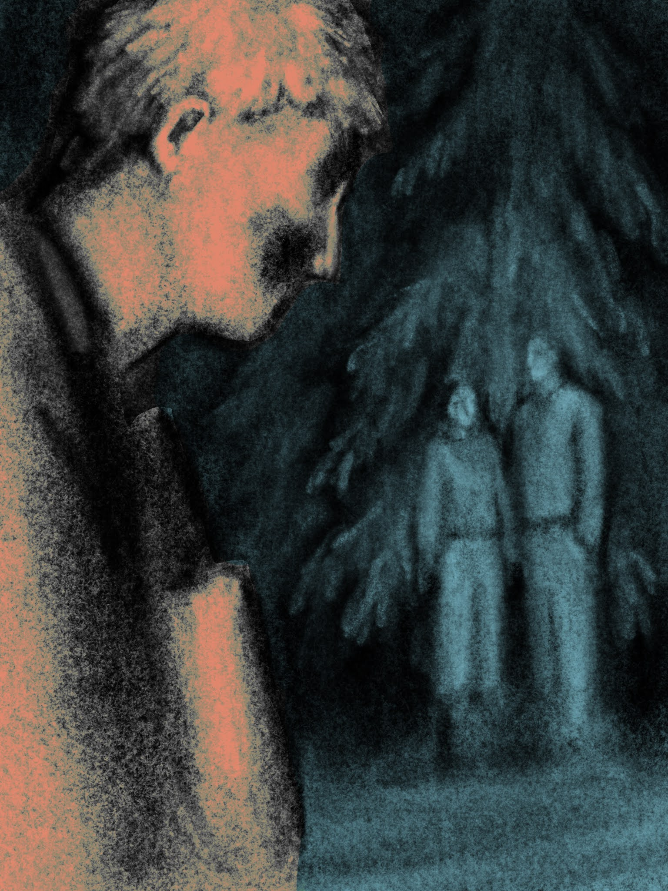
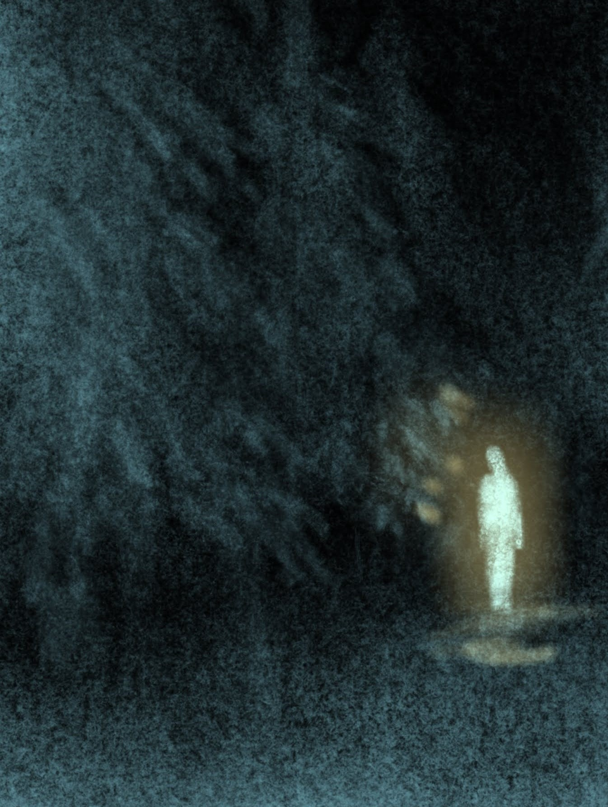

Mira Eiene Foust
Prosjekt
Replikk"
24 timers tegneseriemaraton
Plakat og tekst
Animasjon
Fiktivt univers
Andre arbeid
Illustrasjoner
Stoff animasjon
Redesign og klær
Om meg

Tidsskriftet Replikk" er et uavhengig og ikke-kommersielt tidsskrift laget av studenter og nyutdannede ved Universitetet i Bergen.
Replikk" er universitetets eneste tverrfaglige tidsskrift for samfunnsvitenskap og humaniora, og har fokus på aktuelle og spennende tema som diskuteres på tvers av både sjangre og fagfelt.
Temaet for utgave #53 høst 2023 var Vandring og Jente. Jeg illustrerte to tekster i tidskriftet, en om vandring som narrativt virkemiddel i Ringenes Herre og andre fortellinger, og en bokanmeldelse av Kvitleik av Jon Fosse.
Temaet for utgave #53 høst 2023 var Vandring og Jente. Jeg illustrerte to tekster i tidskriftet, en om vandring som narrativt virkemiddel i Ringenes Herre og andre fortellinger, og en bokanmeldelse av Kvitleik av Jon Fosse.

Med temaet vandring tok jeg utgangspunkt i hva vandringen i Ringenes Herre er, eller hva veien karakterene tar er for illustrasjonene mine.
Kvitleik av Jon Fosse er en veldig interessant skrevet bok. Forfatteren tar i bruk flere litterære virkemiddel som virkelig trekker deg inn i forvirringen og den mentale tilstanden til hovedpersonen
mens han tråkker seg lengre og lengre inn i den mørke skogen, mer og mer påvirket av kulden.
Jeg ville fange hvordan mørket og forvirringen oppleves, det du faktisk ser når du myser inn i mørket, ikke bare lage en mørk illustrasjon.
På forskjellige punkt i boken ser fortelleren forskjellige syner, blant annet møter han plutselig på foreldrene hans midt i skogen.




h